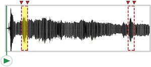
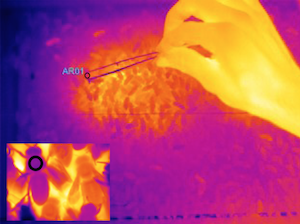
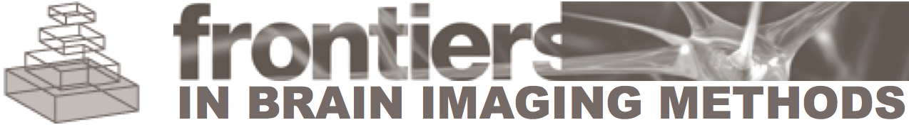
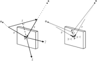

| See my Open Science Framework page for all papers, posters, proposals, and presentations or Google Scholar for some of my publications. | |

|
J Clucas, C White, B Koo, M Milham, A Klein. 2017. Assessing actimeters for inclusion in the Healthy Brain Network bioRxiv. doi: doi.org/10.1101/183772 |

|
M Milham, C Craddock, M Fleischmann, J Son, J Clucas, H Xu, B Koo, A Krishnakumar, B Biswal, F Castellanos, S Colcombe, A Di Martino, X-N Zuo, A Klein. 2017. Assessment of the impact of shared data on the scientific literature bioRxiv. doi: doi.org/10.1101/183814 MP Milham, A Klein, C Craddock. 2017. Opinion: Share your data The Scientist. |

|
LM Alexander, J Escalera, L Ai, C Andreotti, K Febre, A Mangone, NV Potler, N Langer, A Alexander, M Kovacs, S Litke, B O'Hagan, B Bronstein, A Bui, M Bushey, V Castagna, N Camacho, E Chan, D Citera, J Clucas, S Cohen, M Eaves, B Fradera, N Grant-Villegas, G Green, C Gregory, E Hart, S Harris, C Lord, D Kahn, K Kabotyanski, K Kleinman, B Koo, E Kramer, A Margolis, KR Merikangas, J Milham, G Minniti, R Neuhaus, A Nussbaum, Y Osman, LC Parra, KR Pugh, A Racanello, A Restrepo, T Saltzman, B Septimus, R Tobe, R Waltz, A Williams, A Yeo, FX Castellanos, A Klein, T Paus, BL Leventhal, RC Craddock, HS Koplewicz, MP Milham. 2017. The Healthy Brain Network Biobank: An open resource for transdiagnostic research in pediatric mental health and learning disorders bioRxiv. doi: doi.org/10.1101/149369 |

|
A Klein, SS Ghosh, FS Bao, J Giard, Y Hame, E Stavsky, N Lee, B Rossa, M Reuter, EC Neto, A Keshavan. 2017. Mindboggling morphometry of human brains. PLoS Computational Biology 13(3): e1005350. doi: doi.org/10.1371/journal.pcbi.1005350 (bioRxiv 2016 preprint) |

|
MP Milham, RC Craddock, A Klein. 2017. Clinically useful brain imaging for neuropsychiatry: How can we get there? Depression and Anxiety 2017:1-10. doi: doi.org/10.1002/da.22627 |

|
A Keshavan, A Klein, B Cipollini. 2017. Interactive online brain shape visualization. Research Ideas and Outcomes 3: e12358. doi: doi.org/10.3897/rio.3.e12358 (bioRxiv 2016 preprint) |

|
KJ Gorgolewski, F Alfaro-Almagro, T Auer, P Bellec, M Capota, M Mallar Chakravarty, NW Churchill, RC Craddock, GA Devenyi, A Eklund, O Esteban, G Flandin, SS Ghosh, JS Guntupalli, M Jenkinson, A Keshavan, G Kiar, PR Raamana, D Raffelt, CJ Steele, P-O Quirion, RE Smith, SC Strother, G Varoquaux, T Yarkoni, Y Wang, RA Poldrack. 2016.
BIDS Apps: Improving ease of use, accessibility and reproducibility of neuroimaging data analysis methods. bioRxiv. doi: doi.org/10.1101/079145 |

|
A Klein, SS Ghosh. 2016.
Doctor as data scientist: a high-dimensional view of health. Medium. |

|
SS Ghosh, G Ciccarelli, TF Quatieri, A Klein. 2016.
Speaking one's mind: Vocal biomarkers of depression and Parkinson disease. Journal of the Acoustical Society of America. 139:2193. doi: doi.org/10.1121/1.4950530 |

|
E Chaibub Neto, BM Bot, T Perumal, L Omberg, J Guinney, M Kellen, A Klein, SH Friend, AD Trister. 2016.
Personalized hypothesis tests for detecting medication response in Parkinson disease patients using iPhone sensor data. Pacific Symposium on Biocomputing. 21:273-284. PMID:26776193. doi: doi.org/10.1142/9789814749411_0026 |

|
B Bot, C Suver, EC Neto, M Kellen, A Klein, C Bare, M Doerr, A Pratap, J Wilbanks, ER Dorsey, SH Friend, AD Trister. 2016.
The mPower Study, Parkinson Disease Mobile Data Collected Using ResearchKit. Scientific Data 3, Article number: 160011. doi: doi.org/10.1038/sdata.2016.11 |

|
GI Allen, N Amoroso, C Anghel, V Balagurusamy, CJ Bare, D Beaton, R Bellotti, DA Bennett, K Boehme, PC Boutros, L Caberlotto, C Caloian, F Campbell, E Chaibub Neto, Y-C Chang, B Chen, C-Y Chen, T-Y Chien, T Clark, S Das, C Davatzikos, J Deng, D Dillenberger, RJB Dobson, Q Dong, J Doshi, D Duma, R Errico, G Erus, E Everett, DW Fardo, SH Friend, H Fröhlich, J Gan, P St George-Hyslop, SS Ghosh, E Glaab, RC Green, Y Guan, M-Y Hong, C Huang, J Hwang, J Ibrahim, P Inglese, Q Jiang, Y Katsumata, JSK Kauwe, A Klein, D Kong, R Krause, E Lalonde, M Lauria, E Lee X Lin, Z Liu, J Livingstone, BA Logsdon, S Lovestone, T-W Ma, A Malhotra, LM Mangravite, TJ Maxwell, E Merrill, J Nagorksi, A Namasivayam, M Narayan, M Naz, SJ Newhouse, TC Norman, RN Nurtdinov, Y-J Oyang, Y Pawitan, S Peng, MA Peters, SR Piccolo, P Praveen, C Priami, VY Sabelnykova, P Senger, X Shen, A Simmons, A Sotiras, G Stolovitzky, S Tangaro, A Tateo, Y-A Tung, NJ Tustison, S Varol, G Vradenburg, MW Weiner, G Xiao, L Xie, Y Xie, J Xu, H Yang, X Zhan, Y Zhou, F Zhu, H Zhu, S Zhu, Alzheimer's Disease Neuroimaging Initiative. 2016.
Crowdsourced estimation of cognitive decline and resilience in Alzheimer's disease. Alzheimer's & Dementia 12(6): 645-653. PMID: 27079753. doi: doi.org/10.1016/j.jalz.2016.02.006 Alzheimer's Disease Challenge website |

|
H Muller, J Kalpathy-Cramer, A Hanbury, K Farahani, R Sergeev, JH Paik, A Klein,
A Criminisi, A Trister, T Norman, D Kennedy, G Srinivasa, A Mamonov, N Preuss. 2016.
Report on the Cloud-Based Evaluation Approaches Workshop 2015. ACM SIGIR Forum. 50(1):35-41. Workshop Website |

|
A Klein. 2016.
A game for crowdsourcing the segmentation of BigBrain data (NIH proposal). Research Ideas and Outcomes. 2: e8816. doi: doi.org/10.3897/rio.2.e8816 |
|  |
A Klein. 2016.
Crowdsourcing voice editing and quality assessment of data collected from the largest mobile phone-based research study of Parkinson disease (NIH proposal). Research Ideas and Outcomes. 2: e8848. doi: doi.org/10.3897/rio.2.e8848 |

|
A Klein. 2016.
Visual Parkinson's Disease Rating Scale: A Universal Iconic Questionnaire for Epidemiological Studies in India (NIH proposal). Research Ideas and Outcomes. 2: e8834. doi: doi.org/10.3897/rio.2.e8834 |

|
A Klein, S Ghosh. 2016.
Graph-based clinical diagnosis and prediction using multi-modal neuroimaging data (NIH proposal). Research Ideas and Outcomes. 2: e8835. doi: doi.org/10.3897/rio.2.e8835 |

|
A Klein. 2016.
Brain Graph Interface (NIH proposal). Research Ideas and Outcomes. 2: e8817. doi: doi.org/10.3897/rio.2.e8817 |

|
A Klein. 2016.
Data-Visual Relationships to Subject Performance and Eye Movements (NSF proposal). Research Ideas and Outcomes. 2: e8814. doi: doi.org/10.3897/rio.2.e8814 |

|
A Klein. 2016.
A composition-based taxonomy of information graphics. Journal of Design and Science (also published on Medium). |

|
A Klein, SP Ellis. 2016.
Concurrence Topology: Finding High-Order Dependence in Neuropsychiatric Data (NIH proposal). Research Ideas and Outcomes. 2: e8815. doi: doi.org/10.3897/rio.2.e8815 SP Ellis, A Klein. 2015. "Concurrence Topology:" A New Method for Describing High-Order Statistical Dependence in Data. 31st International Symposium on Computational Geometry (Eindhover, the Netherlands). |

|
A Klein, EC Neto, S Ghosh, ADNI. 2015.
Detailed shape analysis of healthy brains and brains with Alzheimer's disease. Human Brain Mapping 2015 (Honolulu, Hawaii). Abstract |

|
BN Nichols, JB Poline, RA Poldrack, A Klein, D Kwon, W Chu, KM Pohl. 2015.
Implementing Semantics-Driven Data Exchange in Brain Science: The NCANDA Case Study. Big Data to Knowledge All Hands Grantee Meeting. National Institutes of Health, Bethesda, MD. |

|
DB Keator, J Poline, BN Nichols, SS Ghosh, C Maumet, KJ Gorgolewski, T Auer, C Craddock, G Chen, G Flandin, YO Halchenko, M Hanke, C Haselgrove, K Helmer, M Jenkinson, A Klein, L Lanyon, D Marcus, D Margulies, F Michel, TE Nichols, RA Poldrack, R Reynolds, Z Saad, T Schmah, J Steffener, JA Turner, JD Van Horn, S Das, DN Kennedy. 2015.
Standardizing Metadata in Brain Imaging. Front. Neurosci. Conference Abstract: Neuroinformatics 2015. doi: doi.org/10.3389/conf.fnins.2015.91.00004 Online presentation by David Keator. |

|
DB Keator, SS Ghosh, C Maumet, G Flandin, BN Nichols, TE Nichols, GA Burns, R Bruehl, C Craddock, B Federick, K Gorgolewski, YO Halchenko, M Hanke, C Haselgrove, K Helmer, A Klein, D Marcus, M Milham, F Michel, R Poldrack, J Steffener, Y Schwartz, RM Stoner, JA Turner, DN Kennedy, J Poline. 2014.
Developing and using the data models for neuroimaging: the NIDASH Working Group. Front. Neuroinform. Conference Abstract: Neuroinformatics 2014. doi: doi.org/10.3389/conf.fninf.2014.18.00030 |

|
S Ghosh, A Keshavan, J Salvatore, A Klein. 2014.
BIPS: A Framework for Curating and Executing Brain Imaging Pipelines. Front. Neuroinform. Conference Abstract: 5th INCF Congress of Neuroinformatics. doi: doi.org/10.3389/conf.fninf.2014.08.00053 |
|  |
BA Klein, M Stiegler, A Klein, Tautz J. 2014.
Mapping sleeping bees within their nest: spatial and temporal analysis of worker honey bee sleep. PLoS ONE. 9(7): e102316. doi: doi.org/10.1371/journal.pone.0102316 Harvard Dataverse |

|
SP Ellis, A Klein. 2014.
Describing high-order statistical dependence using “Concurrence Topology,” with application to functional MRI brain data. Homology, Homotopy and Applications. 16(1): 245-264. doi: doi.org/10.4310/HHA.2014.v16.n1.a14 Earlier version on arXiv and poster Concurrence Topology website |

|
A Klein, N Nichols, D Haehn. 2014.
Mindboggle 2 interface: online visualization of extracted brain features with XTK. Front. Neuroinform. Conference Abstract: 5th INCF Congress of Neuroinformatics. doi: doi.org/10.3389/conf.fninf.2014.08.00086 |

|
A Klein, EN Neto, J Giard, F Bao, Y Hame, M Reuter, N Tustison, B Avants, J Tourville, H Dai, N Nichols, S Ghosh. 2014.
Shape analysis of 101 healthy human brains. Human Brain Mapping 2014 (Hamburg, Germany). |

|
TJ Tustison, PA Cook, A Klein, G Song, SR Das, JT Duda, BM Kandel, N van Strien, JR Stone, JC Gee, BB Avants. 2014.
Large-scale evaluation of ANTs and FreeSurfer cortical thickness measurements. NeuroImage. 99:166-179. doi: doi.org/10.1016/j.neuroimage.2014.05.044 |
|  |
NJ Tustison, HJ Johnson, T Rohlfing, A Klein, SS Ghosh, L Ibanez, B Avants. 2013.
Instrumentation bias in the use and evaluation of scientific software: Recommendations for reproducible practices in the computational sciences. Frontiers in Brain Imaging Methods. 7:162. doi: doi.org/10.3389/fnins.2013.00162 |
|
Ellora Cave Temple photographs on page 958, architecture textbook:
AJ Ignacio (translator and editor) 2013. Semper: El estilo. Buenos Aires: Azpiazu Ediciones. |
|

|
BA Klein, L Rath, A Klein, SS Ghosh, G Galizia, C Kleineidam. 2013.
Imaging brain activity of honey bees sensing odors during sleep. Sleep Research Society (Baltimore, MD, USA). |

|
A Klein, SS Ghosh, BA Klein, L Rath, G Galizia, C Kleineidam. 2012.
Applying human brain image processing methods to honeybee calcium image data. Neuroinformatics 2012 (Munich, Germany). |

|
SS Ghosh, A Klein, B Avants, J Millman. 2012.
Learning from open source software projects to improve scientific review. Frontiers in Computational Neuroscience. 6:18. doi: doi.org/10.3389/fncom.2012.00018 |

|
A Klein, FS Bao, Y Hame, E Stavsky, J Giard, D Haehn, N Nichols, SS Ghosh. 2012.
Mindboggle: Automated human brain MRI feature extraction, labeling, morphometry, and online visualization. Neuroinformatics 2012 (Munich, Germany). |

|
A Klein, J Tourville. 2012.
101 labeled brain images and a consistent human cortical labeling protocol. Frontiers in Brain Imaging Methods. 6:171. doi: doi.org/10.3389/fnins.2012.00171 Supplementary website and Open Science Framework repository |

|
J Tourville, A Klein. 2012.
101 labeled brains and a new human cortical labeling protocol. Neuroinformatics 2012 (Munich, Germany). |

|
N Lee, AF Laine, A Klein. 2011.
Towards a deep learning approach to brain parcellation. IEEE International Symposium on Biomedical Imaging: From Nano to Macro, 2011:321-324. doi: doi.org/10.1109/ISBI.2011.5872414 |

|
FS Bao, SS Ghosh, J Giard, RV Parsey, A Klein. 2011.
Brain shape analysis for predicting treatment remission in major depressive disorder. 41st Annual Meeting for the Society for Neuroscience. |

|
A Klein. 2011.
Mindboggle: an informatics framework for open research in quantifying the shape of the human brain. BioImage Informatics II (talk at Janelia Farm). |

|
N Lee, A Klein. 2011.
A graph-based database of hierarchical brain features. Frontiers in Neuroinformatics (Neuroinformatics 2011). doi: doi.org/10.3389/conf.fninf.2011.08.00139 |

|
F Bao, N Lee, Y Hame, K Im, D Riviere, G Li, A Klein. 2011.
Automated extraction of nested sulcal features from human brain MRI data. 17th Annual Meeting for the Organization of Human Brain Mapping. GitHub repository |

|
BB Avants, NJ Tustison, G Song, PA Cook, A Klein, JC Gee. 2011.
A reproducible evaluation of ANTs similarity metric performance in brain image registration. NeuroImage. 54(3): 2033-2044. PMCID: PMC3065962. |

|
D Peruzzo, A Bertoldo, R Parsey, A Klein. 2011.
Automatic detection of corrupted volumes in DTI data. 28th Annual Meeting for the European Society for Magnetic Resonance in Medicine and Biology. |

|
BA Klein, A Klein, MK Wray, UG Mueller, TD Seeley. 2010.
Sleep Deprivation impairs precision of waggle dance signaling in honey bees. Proceedings of the National Academy of Sciences. 107(52): 22705-22709. doi: doi.org/10.1073/pnas.1009439108 Nature News, New Scientist, Wired,... |

|
A Klein, A Worth, J Tourville, B Landman, T Dal Canton, SS Ghosh, D Shattuck. 2010.
An interactive tool for constructing optimal brain colormaps. 40th Annual Meeting for the Society for Neuroscience. Website: https://binarybottle.github.io/braincolor/colormaps/ |

|
A Klein, T Dal Canton, SS Ghosh, B Landman, J Lee, A Worth. 2010.
Open labels: online feedback for a public resource of manually labeled brain images. 16th Annual Meeting for the Organization of Human Brain Mapping. |

|
B Avants, A Klein, N Tustison, J Woo, JC Gee. 2010.
Evaluation of open-access, automated brain extraction methods on multi-site multi-disorder data. 16th Annual Meeting for the Organization of Human Brain Mapping. Synapse website |

|
A Klein, SS Ghosh, B Avants, BTT Yeo, B Fischl, B Ardekani, JC Gee, JJ Mann, RV Parsey. 2010.
Evaluation of volume-based and surface-based brain image registration methods. NeuroImage. 51: 214-220. PMCID: PMC2862732. Synapse website |

|
A Klein, SS Ghosh, B Avants, B Fischl, T Yeo, JJ Mann, RV Parsey. 2009.
An evaluation of volume- and surface-based nonlinear registration of human brain MRI data. 15th Annual Meeting for the Organization of Human Brain Mapping.* |

|
A Klein, J Andersson, BA Ardekani, J Ashburner, B Avants, M-C Chiang, GE Christensen,
DL Collins, J Gee, P Hellier, JH Song, M Jenkinson, C Lepage, D Rueckert, P Thompson, T Vercauteren, RP Woods, JJ Mann, RV Parsey. 2009.
Evaluation of 14 nonlinear deformation algorithms applied to human brain MRI registration. NeuroImage. 46(3): 786-802. PMCID: PMC2747506 Synapse website |

|
C DeLorenzo, A Klein, A Mikhno, N Gray, F Zanderigo, JJ Mann, RV Parsey. 2009.
A new method for assessing PET-MRI coregistration. Proc. SPIE - Medical Imaging. 7259, 72592W. |

|
BA Klein, KM Olzsowy, A Klein, KM Saunders, TD Seeley. 2008.
Caste-dependent sleep of worker honey bees. Journal of Experimental Biology. 211: 3028-3040. |
|  |
A Klein. 2008.
Relating vector ray-tracing equations for holograms of arbitrary shape and thickness. Journal of the Optical Society of America A. 25(4): 979-983. |
|
A Klein, W Bevington. 2008.
“Information visualization” entry in: Erlhoff Michael, Marshall Tim, eds. Design Dictionary: Perspectives on Design Terminology. Basel, Boston, Berlin: Birkhauser Verlag. |
|

|
A Klein, B Mensh, S Ghosh, J Tourville, J Hirsch. 2005.
Mindboggle: Automated brain labeling with multiple atlases. BMC Medical Imaging. 5:7. PMCID: PMC1283974 |

|
A Klein, J Hirsch. 2005.
Mindboggle: A scatterbrained approach to automate brain labeling. NeuroImage. 24(2): 261-280. PMID: 15627570 Thesis: Automated brain labeling with Mindboggle |

|
A Klein. 2004.
Activity patterns in the brain: breaking up the problem into pieces. International Conference on Complex Systems (ICCS2004 talk). |

|
A Klein, J Hirsch. 2003.
Mindboggle: new developments in automated brain labeling. 9th Annual Meeting for the Organization of Human Brain Mapping. |

|
A Klein, J Hirsch. 2002.
Fully-automated nonlinear labeling of human brain activity. 8th Annual Meeting for the Organization of Human Brain Mapping. |

|
A Klein, J Hirsch. 2001.
Automatic labeling of brain anatomy and fMRI brain activity. 7th Annual Meeting for the Organization of Human Brain Mapping. |

|
MA Klug, A Klein, W Plesniak, A Kropp, B Chen. 1997.
Optics for full-parallax holographic stereograms. Proc. SPIE. 3011 (78) “Practical Holography XI” doi: doi.org/10.1117/12.271340 Thesis: Dispersion Compensation for Reflection Holography |